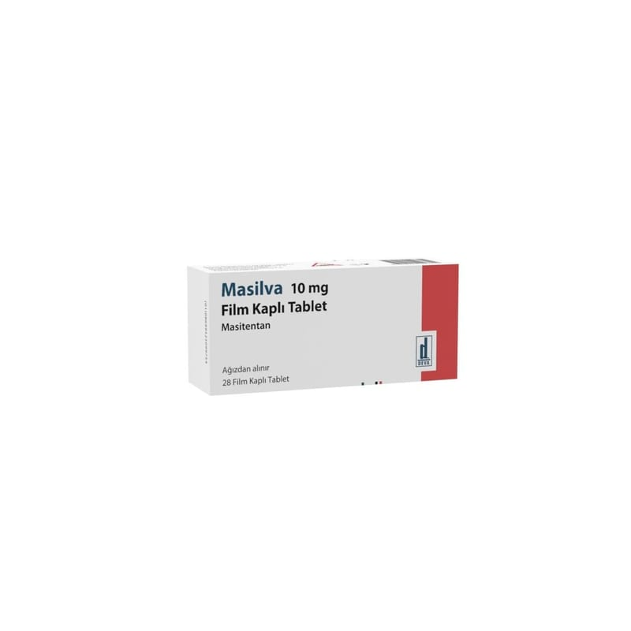

Masilva 10 mg Film Kaplı Tablet, 28 Adet

Ne için kullanılır
KT · Bölüm 1MASİLVA, “endotelin reseptör antagonistleri” adı verilen ilaç sınıfına bağlı olan masitentan etkin maddesini içerir.
MASİLVA, beyaz ila beyazımsı, bikonveks, yuvarlak film kaplı tablettir.
MASİLVA, bir karton kutu içerisinde 4 blister (her bir blisterde 7 tablet) toplamda 28 tablet ve kullanma talimatı ile birlikte sunulmaktadır.
MASİLVA yetişkinlerde uzun süreli pulmoner arteriyel hipertansiyon (PAH) tedavisi için kullanılır. PAH, kanı kalpten akciğerlere (pulmoner arterlere) taşıyan kan damarlarındaki yüksek kan basıncıdır. PAH hastası olan kişilerde bu arterler daraldığı için kalbin kanı bu damarlar üzerinden pompalamak için daha çok çalışması gerekir. Bu da kişinin kendisini yorgun hissetmesine, baş dönmesine ve nefes darlığına sebep olur.
MASİLVA pulmoner arterleri genişleterek kalbin kanı bu damarlar üzerinden pompalamasını kolaylaştırır. Böylelikle kan basıncı düşer, belirtiler hafifler ve hastalık seyrinde iyileşme gerçekleşir.